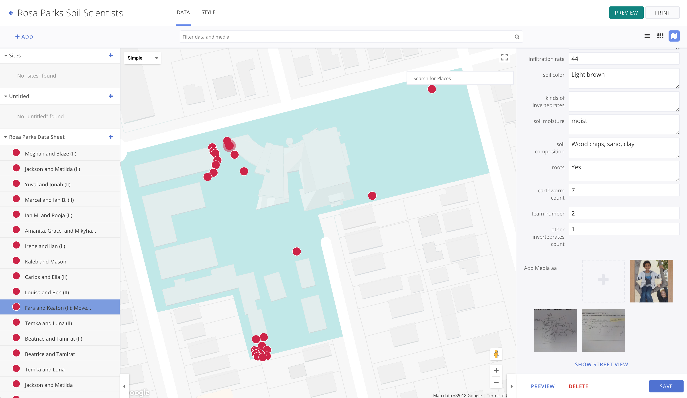

An essential element that allows users to place markers on the map to repersent various locations based on selected media.
There has to be an intuitive way that users can easily place their data on the map to know where the data came from.
For users to easily place where they recorded data, I delved into Google Maps API for markers, and integrated it with actions to add, move, and delete maker at the user's will.
Backbone
Marionette
Local Ground REST API
Google Maps API
The map visualizer became a more complete feature of Local Ground because users can simply place markers on the map and store information and media on the marker to represent a story at any location.